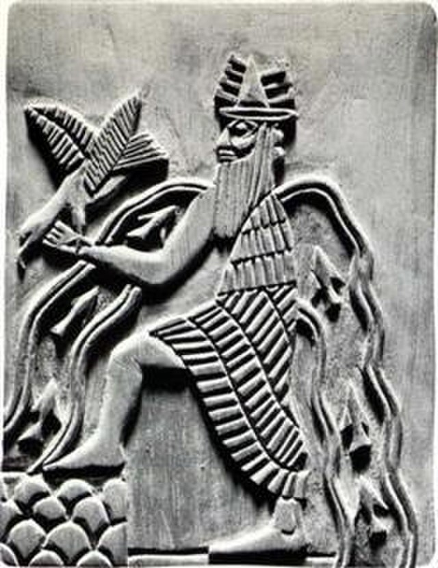

Como grande parte das mitologias da antiguidade o povo mesopotamico eram politeístas, tinham um incontável panteão de deuses e semideuses faziam parte da religião.
Apesar de a mitologia mesopotâmica ser ampla e complexa, seus deuses se organizavam em uma hierarquia clara, de acordo com a influência de seu poder. Os mais importantes eram: An (deus do céu), Enlil (deus do ar), Enki (deus da água), Ninhursag (mãe-terra), Shamash (deus do Sol e da justiça), Anu (senhor dos céus), Sin (deusa da Lua) e Ishtar (deusa da guerra e do amor).
O pensamento religioso dos povos mesopotâmicos tinha traço dualista, admitindo a existência de deuses inclinados para o bem e para o mal. Dessa maneira, a magia, a adivinhação e a astrologia eram utilizadas como meios de interação e conhecimento dos desígnios desse complexo conjunto de divindades. A prática religiosa era estabelecida nos ambientes públicos e privados, sendo os zigurates os principais centros de adoração da população.
Diversas culturas mesopotâmicas acreditavam na vida após a morte e, por isso, desenvolviam uma série de rituais funerários. Geralmente os mortos eram enterrados com alguns de seus objetos pessoais e a tumba que abrigava o corpo poderia indicar a condição financeira do falecido. De acordo com algumas narrativas míticas, os mortos passavam o além-vida em um mundo subterrâneo onde se alimentavam de pó para o resto de seus dias.
A criação do ser humano é o tema principal do mito de Enki e Ninmah . Isso começa com a criação do mundo e a população inicial da Terra pelos deuses, que se unem e se proliferam, até que tenham que produzir seu próprio alimento para sobreviver, o que é extremamente insatisfeito com eles. Eles, portanto, reclamam com a deusa Namma , que pede a seu filho Enki que desenvolva substitutos para os deuses que trabalhariam em seu lugar e para seu benefício. Enki fez um molde, depois o deu à mãe para que ela colocasse o barro formando os seres humanos, que ganharam vida graças à ajuda de um grupo de deusas em primeiro lugar foi Ninmah , que atribuiu seu destino ao trabalho para os deuses. A maneira exata pela qual os homens ganham vida não é conhecida, o texto que chegou até os dias de hoje é fragmentário onde talvez seja mencionado. Relata a origem do mundo graças aos feitos de Marduk, uma das principais divindades dos babilônios.
Um mito que foi muito temido e, talvez por isso, compilado diversas vezes, em diferentes épocas na história, foi o mito do dilúvio. Nesse relato contava-se que, em uma época muito remota, os deuses, insatisfeitos com os homens, resolveram destruir a humanidade, fazendo cair uma chuva torrencial, que fez subir as águas dos rios.
No entanto, Enki, o deus das águas, revelou o plano dos deuses a um escolhido, Ziusudra (chamado de Utnapishtim pelos acádios), aconselhando-o a construir uma embarcação gigantesca. Vejam um trecho do relato sumério desse mito, encontrado em Nippur:
Depois que, durante sete dias [e] sete noites
O dilúvio se estendeu sobre a terra [E] o grande barco foi sacudido pelos vendavais sobre as águas Utu [o deus sol] apareceu, espalhando luz sobre o céu e a terra (...)
Tal mito também foi compilado, muitos séculos depois, num dos livros que compõem a Bíblia, tendo como principal personagem um homem chamado Noé. Esse fato pode ser explicado, pois os hebreus (povo que deu origem aos judeus) tinham suas raízes ancestrais em Ur, uma importante cidade da Mesopotâmia.
Os feitos de Gilgamesh, rei de Uruk, na antiga Mesopotâmia, foram cantados por dois mil anos até que um grande incêndio, em 612 a.C., devastou a biblioteca de Nínive, que guardava os registros escritos. Sem eles, o nome de Gilgamesh foi sendo pouco a pouco esquecido até desaparecer completamente. Desapareceram, também, os registros das sociedades que povoaram a Mesopotâmia e regiões vizinhas, e com eles, o passado do Oriente Próximo. Foram encontradas cerca de 30.000 plaquetas de argila com escrita cuneiforme. Eram fragmentos que formavam 1.200 textos distintos. Entre eles, estavam as 12 plaquetas contendo a epopeia de Gilgamesh. A fabulosa história desse herói foi recuperada 48 séculos depois de seu reinado e, mais uma vez, encantou historiadores e o público leigo.
Gilgamesh foi o quinto rei da primeira dinastia de Uruk, tendo reinado por volta de 2650 a.C. Considerado o mais ilustre antecessor dos reis sumérios, Gilgamesh tornou-se objeto de lendas e poemas passando a ser venerado como um herói que, ao longo do tempo, foi sendo divinizado. Uruk, cidade suméria surgida por volta de 3.500 a.C., foi uma das primeiras cidades da História. Exerceu forte influência na cultura, urbanização e formação do Estado na região mesopotâmica. O poema menciona suas muralhas, templos e mercados – o que foi confirmado pela arqueologia.
O poema se inicia com uma exaltação a Gilgamesh destacando suas virtudes, sua constituição (dois terços divinos e um terço humano) e seus feitos: as muralhas de Uruk e o templo de Eanna. O rei é imbatível e arrogante, e a população, embora reconheça sua competência, está insatisfeita com a prepotência e luxúria dele. Os habitantes de Uruk rogam à deusa Aruru para criar um ser igual a Gilgamesh que o desafie. Aruru, tomando um pouco de barro, cria Enkidu, deixando-o no meio da floresta, afastado da humanidade. Ele é um homem selvagem, tem o corpo coberto de pelo, os cabelos longos e desgrenhados. Ele vive com e como os animais. Gilgamesh toma conhecimento da existência de Enkidu e manda uma cortesã sagrada seduzir Enkidu e introduzi-lo a hábitos civilizados. A mulher corta os cabelos de Enkidu, raspa os pelos, veste-o e ensina-o a comer pão e tomar vinho. Finalmente, leva-o a Gilgamesh. Ao se verem, os dois se estranham, medem força e lutam ferozmente. Enkidu faz Gilgamesh ajoelhar-se ou perder o equilíbrio e cair. Em outra interpretação, Gilgamesh acaba derrubando Enkidu. Seja como for, a luta termina empatada, os dois se abraçam e selam sua amizade.
A vida na cidade, porém, os torna indolentes e preguiçosos e eles decidem, então, partir para aventuras que os desafiem. Primeiro, enfrentam Humbaba, um gigante feroz e temível que vomita fogo, e vive na floresta de cedros. Gilgamesh arremete oito furacões contra o monstro e os dois heróis matam o monstro Humbaba cortando-lhe a cabeça. A segunda aventura é consequência direta da primeira. Ao regressar ao palácio, Gilgamesh se lava e coloca sua melhor roupa. Sua beleza atrai a deusa Ishtar que se apaixona e pede-o em casamento. Promete-lhe presentes magníficos, poderes e a divinização. Gilgamesh recusa, desdenhando a oferta explica que Ishtar abandona os amantes depois de esgotá-los. Ofendida, Ishtar se vinga, enviando o gigantesco touro celeste para destruir o herói e seu palácio. O touro, contudo, é derrotado por Gilgamesh e Enkidu. Inconformada, Ishtar amaldiçoa Gilgamesh e pune-o com a morte do amigo. Enkidu é tomado por uma doença fatal e depois de doze dias de sofrimento, falece. Gilgamesh se desespera com a perda do amigo.
Tomado de pânico ao pensar que também um dia morreria, ele sai à procura de Utnapishtim, o único homem que foi poupado pelo dilúvio e que vivia nos confins do mundo gozando do dom da imortalidade. O rei quer saber como poderia, também, alcançar a imortalidade. Depois de uma longa jornada, cheia de perigos e provações, Gilgamesh chega até Utnapishtim. Este lhe conta como foi o dilúvio e tenta convencer o rei que sua busca é irrealizável. Gilgamesh insiste mas Utnapishtim não cede. Contudo, a mulher de Utnapishtim, compadecida com o fracasso do herói, revela-lhe o segredo da imortalidade: no fundo do mar, havia uma planta maravilhosa e quem a comesse seria eternamente jovem. O herói amarra pedras nos pés, mergulha no mar profundo e encontra a planta mágica. Fere as mãos para arrancá-la, mas consegue traze-la à superfície. Mas não a come, decide dividi-la com os anciãos de Uruk. Percorre, então o caminho de volta. Cansado, adormece. Uma serpente sente o cheiro da flor e se apossa dela, e logo muda de pele e rejuvenesce. Gilgamesh descobre que falhou e volta decepcionado para Uruk onde volta a admirar suas muralhas e construções. O poema termina com a morte de Gilgamesh:
O destino decretado por Enlil da montanha, o pai dos deuses foi cumprido. (…) Os heróis e os sábios, como a lua nova, têm seus períodos de ascensão e declínio. Foi-te dado um trono, reinar era teu destino; a vida eterna não era o teu destino. Assim não fiques triste, não te atormentes. Ele te concedeu supremacia sobre o povo, vitória nas batalhas (…). Mas não abuses deste poder; procede com justiça com teus servos no palácio, faze justiça ante a face do Sol. OLIVEIRA (trad.): 2001.
Em resumo, a mitologia mesopotâmica teve um impacto significativo na religião, na literatura, na arte e na cultura da antiguidade. Suas histórias e deuses ainda são objetos de interesse acadêmico e cultural, fornecendo uma janela para as crenças e valores das civilizações mesopotâmicas e suas influências nas sociedades posteriores.